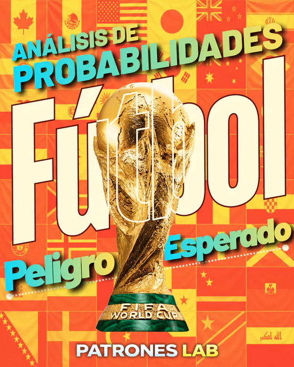
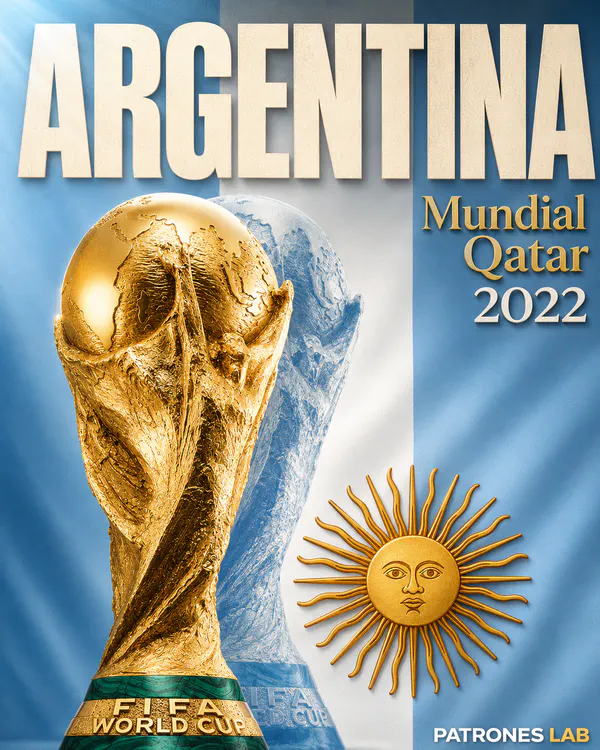

1
 Power BI
Power BI Qlik Cloud
Qlik Cloud Looker StudioSQL Server
Looker StudioSQL Server
Rozpoznanie
Kontekst i celZrozumienie problemu, decyzji wymagającej wsparcia, potrzeb użytkowników i oczekiwanego rezultatu.
Analityka danych
Patrones Lab to laboratorium analizy danych dotyczących rzeczywistych zjawisk z codziennego życia.
Powstają tu niezależne projekty oparte na danych publicznych. Ich celem jest odkrywanie wzorców, opisywanie zachowań i przedstawianie wniosków we właściwym kontekście.
Chodzi o stawianie pytań, przygotowywanie danych, tworzenie przejrzystych analiz i prezentowanie wyników w formie wizualnej.

Nazywam się Malcolm Di Pietro Cagliari, jestem aktuariuszem i specjalistą w dziedzinie Data & Analytics. Moje doświadczenie łączy Business Intelligence, raportowanie korporacyjne, modelowanie danych i analitykę predykcyjną, a zdobywałem je m.in. w bankowości, ubezpieczeniach i transporcie lotniczym.
Specjalizuję się w łączeniu potrzeb biznesowych z rozwiązaniami opartymi na danych: definiowaniu KPI, porządkowaniu informacji i tworzeniu rozwiązań takich jak dashboardy oraz modele, które pomagają lepiej zrozumieć rzeczywistość i podejmować decyzje z uwzględnieniem szerszego kontekstu.
Zrozumienie problemu, decyzji wymagającej wsparcia, potrzeb użytkowników i oczekiwanego rezultatu.
Identyfikacja dostępnych źródeł, ich pochodzenia, aktualności, wiarygodności i najważniejszych ograniczeń.
Porządkowanie, czyszczenie i łączenie danych w spójną bazę gotową do analizy.
Opracowanie analizy, modelu lub dashboardu odpowiadającego określonemu celowi.
Sprawdzenie spójności i stabilności wyników oraz ich zgodności z realiami biznesowymi.
Udokumentowanie gotowego rozwiązania, automatyzacja powtarzalnych procesów i wykorzystanie informacji zwrotnych przy dalszych ulepszeniach.
Wybrane projekty oparte na danych publicznych, z opisem metodologii i wizualizacją wyników. Filtry pozwalają przeglądać je według dziedziny, narzędzia lub rodzaju rozwiązania.

Analiza ruchu lotniczego w Hiszpanii na podstawie publicznych danych AENA: wielkość ruchu, wzorce dla poszczególnych lotnisk i różnice między kategoriami.

Analiza eksploracyjna Airbnb w Londynie: porównanie cen, rodzajów zakwaterowania, dostępności, minimalnej długości pobytu i różnic między dzielnicami.

Analiza przejazdów taksówkami w Chicago pod kątem czasu trwania, popytu, rozkładu przestrzennego i wzorców operacyjnych.

Model klasyfikacyjny oparty na regresji logistycznej, identyfikujący relatywnie drogie i tanie oferty w obrębie danego rodzaju zakwaterowania.

Interaktywny dashboard w Looker Studio do analizy przejazdów taksówkami w Chicago, wskaźników operacyjnych, wzorców godzinowych oraz tras między miejscami rozpoczęcia i zakończenia podróży.

Model regresji logistycznej szacujący prawdopodobieństwo gola po strzale na podstawie publicznych danych StatsBomb, z walidacją według meczów i zastosowaniem do mundialu w Katarze w 2022 roku.
Otwórz projekt
Probabilistyczny model oczekiwanego zagrożenia w piłce nożnej, oparty na publicznych danych StatsBomb. Szacuje prawdopodobieństwo gola w kolejnych 5 akcjach.

✅ opublikowano
Grupowanie nienadzorowane metodą K-means do wykrywania oszustw związanych z kartami kredytowymi.

✅ opublikowano
Klasyfikacja nadzorowana z użyciem regresji logistycznej do wykrywania oszustw związanych z kartami kredytowymi.

✅ opublikowano
Grupowanie nienadzorowane metodą DBSCAN do identyfikowania potencjalnych oszustw związanych z kartami kredytowymi.
Otwórz projekt
Analiza statystyk mundialu 2022 na podstawie publicznych danych StatsBomb, podsumowująca indywidualne wyniki i porównująca zawodników na radarach percentylowych.

Analiza geoprzestrzenna przejazdów taksówkami w Chicago, identyfikująca najbardziej aktywne obszary, trasy miejskie i koncentrację popytu.

Interaktywny dashboard w Power BI oparty na Spotify Charts, służący do analizy odtworzeń, rankingów, trendów w czasie i geograficznego zasięgu muzyki.

✅ opublikowano
Interaktywny raport w Power BI do analizy wydatków na dostawców, zmian miesięcznych, struktury kategorii, oszczędności i rozkładu geograficznego.

Symulacja miliona scenariuszy mundialu 2026 z wykorzystaniem rankingów Elo, szacująca szanse awansu do półfinału i finału oraz zdobycia mistrzostwa.

Model klasyfikacyjny szacujący szkody gospodarcze związane ze zjawiskami pogodowymi, porównujący regresję logistyczną z siecią neuronową.

Geoprzestrzenna analiza cen Airbnb w Londynie, uwzględniająca odległość od centrum, dzielnice i wskaźniki sąsiedztwa.

Symulacja miliona scenariuszy LaLiga 2026/27 z wykorzystaniem rankingów Elo, szacująca prawdopodobieństwa najważniejszych rozstrzygnięć sezonu.

Model bramek oparty na rozkładzie Poissona, określający siłę ataku i obrony każdej drużyny, połączony z symulacją Monte Carlo do szacowania prawdopodobieństw rozstrzygnięć rozgrywek.

Symulacja miliona scenariuszy Ligi Narodów 2026/27 z rankingami Elo i modelem bramek opartym na rozkładzie Poissona, szacująca szanse wygrania grupy, awansu w fazie pucharowej i zdobycia mistrzostwa.

Model dwumianowy do analizy prawdopodobieństw zdobycia bramek i wyników meczów na podstawie liczby strzałów i skuteczności 36 klubów Ligi Mistrzów 2026/27.
W sprawie ofert pracy, współpracy analitycznej lub projektów BI · ML · Dashboardów.
e-mail: malcolm@patroneslab.com
Napisz, a odpowiem możliwie szybko.